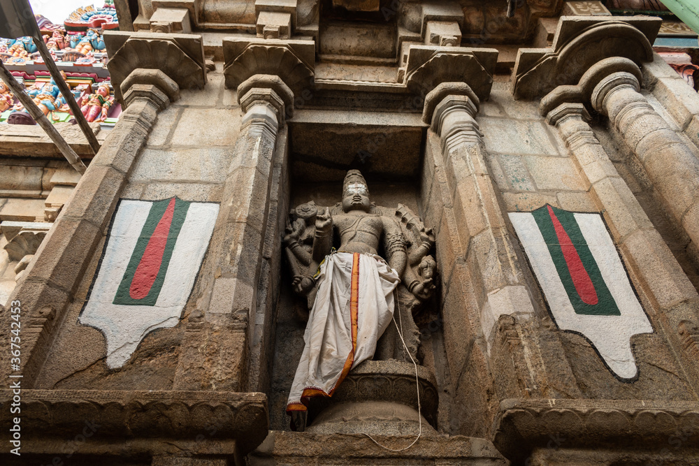

Ranganathaswamy Temple is a Hindu temple dedicated to Ranganatha (a form of Vishnu) and is located in Srirangam, Tiruchirapalli, Tamil Nadu, India.[4] Constructed in the Dravidian architectural style, the temple is glorified by the Tamil poet-saints called the Alvars in their canon, the Naalayira Divya Prabhandam,[5] and has the unique distinction of being the foremost among the 108 Divya Desams dedicated to the god Vishnu. The Srirangam temple is the largest temple compound in India and is one of the largest religious complexes in the world.[4][6] Some of these structures have been renovated, expanded and rebuilt over the centuries as a living temple. The latest addition is the outer tower that is approximately 73 metres (240 ft) tall, it was completed in 1987.[7] Srirangam temple is often listed as the largest functioning Hindu temple in the world, the still larger Angkor Wat being the largest existing temple.[8][9] The temple is an active Hindu house of worship and follows the Tenkalai tradition of Sri Vaishnavism. The annual 21-day festival conducted during the Tamil month of Margali (December–January) attracts 1 million visitors. The temple complex has been nominated as a UNESCO World Heritage Site, and is in UNESCO's tentative list.[4] In 2017 the temple won the UNESCO Asia Pacific Award of Merit 2017 for cultural heritage conservation, making it the first temple in Tamil Nadu to receive the award from the UNESCO.[10][11] It is among the most illustrious Vaishnava temples in South India rich in legend and history. Beyond the ancient textual history, archaeological evidence such as inscriptions refer to this temple, and these stone inscriptions are from late 100 BCE to 100 CE.[12] Hence, "making it one of the oldest surviving active temple complexes in South India".[12] The deity finds a mention in the Sanskrit epic Ramayana which is dated around 800 to 400 BCE which also pushes the existence of deity to the same era.[13][14][15][16][17][18] The temple has played an important role in Vaishnava history starting with the 11th-century career of Ramanuja and his predecessors Nathamuni and Yamunacharya in Srirangam.[19] Its location, on an island between the Kollidam and Kaveri rivers,[4] has rendered it vulnerable to flooding as well as the rampaging of invading armies which repeatedly commandeered the site for military encampment.[20] The temple was looted and destroyed by the Delhi Sultanate armies in a broad plunder raid on various cities of the Pandyan kingdom in early 14th century. The temple was rebuilt in late 14th century,[21][22] the site fortified and expanded with many more gopurams in the 16th and 17th centuries.[23][24] It was one of the hubs of early Bhakti movement with a devotional singing and dance tradition, but this tradition stopped during the 14th century and was revived in a limited way much later
